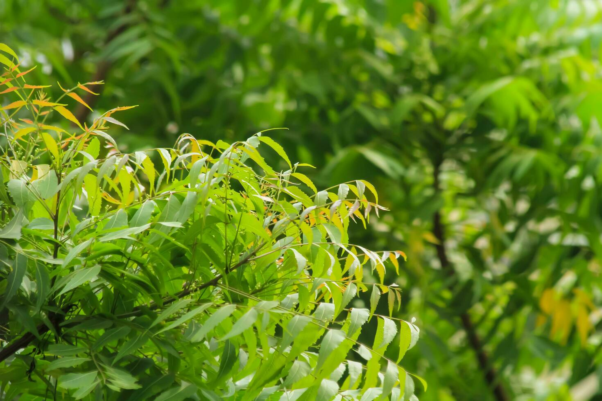

नीम का पेड़ भारत की परंपरागत औषधीय विरासत का एक महत्वपूर्ण हिस्सा है। इसे "प्राकृतिक चिकित्सक" भी कहा जाता है, क्योंकि इसके हर भाग — पत्तियाँ, छाल, फूल, फल और बीज — में औषधीय गुण होते हैं। नीम का उपयोग हजारों वर्षों से आयुर्वेद, यूनानी और सिद्ध चिकित्सा पद्धतियों में किया जा रहा है। यह पेड़ न सिर्फ बीमारियों से लड़ने में मदद करता है, बल्कि पर्यावरण को भी शुद्ध करता है। इसकी उपस्थिति अक्सर गाँवों में घरों के पास देखी जाती है, जहाँ लोग इसका इस्तेमाल रोज़मर्रा की समस्याओं के लिए करते हैं।
अज़ाडिरैक्टा इंडिका (Azadirachta indica)
नीम का पेड़ पूरे भारत में पाया जाता है, विशेष रूप से उत्तर प्रदेश, बिहार, राजस्थान, मध्य प्रदेश, महाराष्ट्र, आंध्र प्रदेश, और तमिलनाडु में। यह गर्म, सूखे और अर्ध-उष्णकटिबंधीय क्षेत्रों में आसानी से उगता है।
नीम का पेड़ केवल एक साधारण वृक्ष नहीं, बल्कि प्रकृति द्वारा दिया गया एक अमूल्य उपहार है। इसके औषधीय गुण न केवल हमारे स्वास्थ्य के लिए फायदेमंद हैं, बल्कि यह पर्यावरण को भी स्वच्छ और संतुलित बनाए रखने में मदद करता है। आज जब प्राकृतिक और आयुर्वेदिक उपचारों की मांग बढ़ रही है, ऐसे में नीम का महत्व और भी अधिक बढ़ गया है। हमें ऐसे वृक्षों को संरक्षित करना चाहिए और उनके लाभों को अपनाना चाहिए।